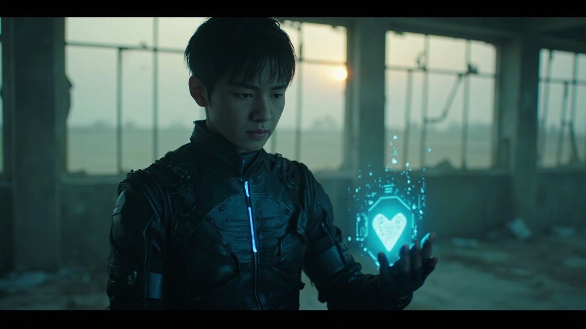
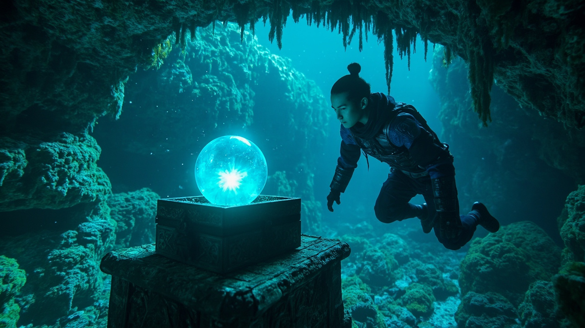
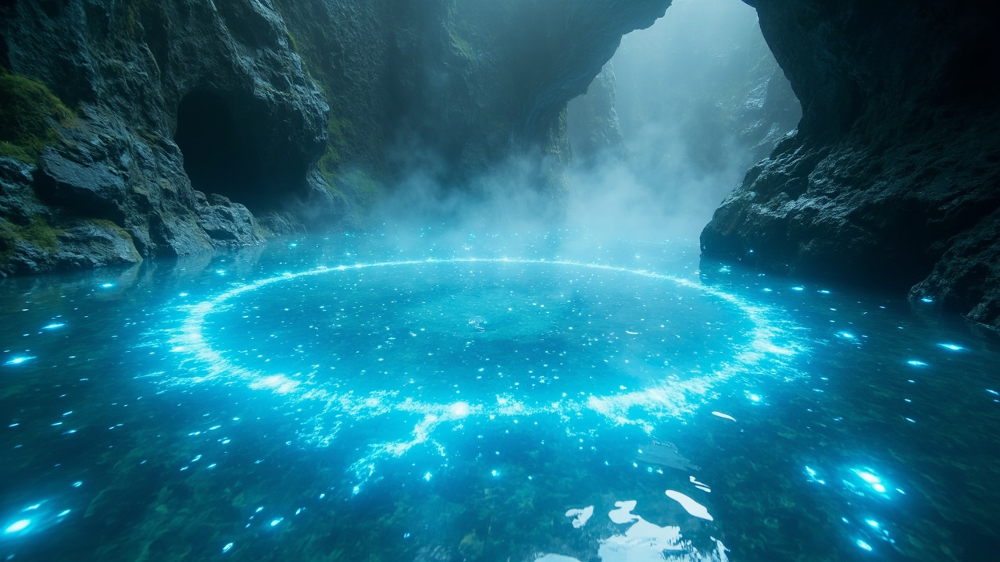
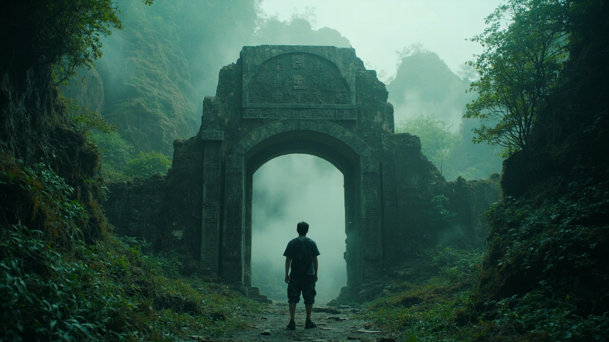
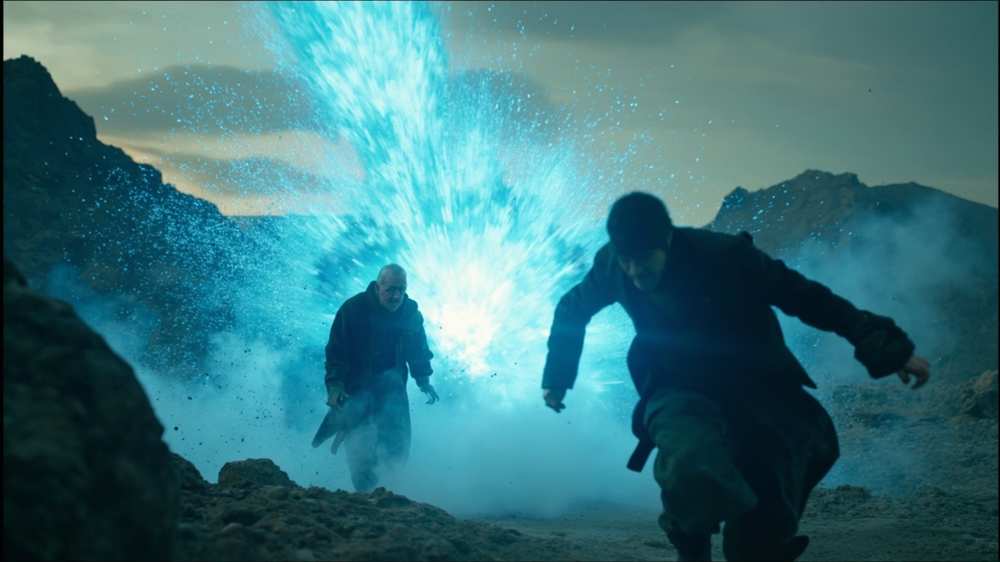

← 文字版
第58章
第60章
📚 目錄

第59章：靈池傳承
🎧 點擊播放有聲朗讀
▶
播放有聲朗讀
場景一
廢墟黎明
一夜過去，血紅的月亮被灰濛濛的晨光取代。林塵從廢棄大樓的角落裡醒來，第一件事就是打開靈芯系統，檢查自己的身體狀態。練氣期二層，靈氣容量僅有0.03%，積分僅剩6點。在這個末法世界，他必須設法找到更好的修煉資源，否則只能在底層掙扎求存。

場景二
北荒禁區
林塵接下了探索任務，冒險前往北方廢墟。走了大約兩個小時，一座巨大的山谷出現在他面前。山谷入口處立著一塊破舊的石碑，上面刻著幾個模糊的字：「北……科研……禁區」。廢土的荒涼景象令人觸目驚心，倒塌的高樓、燃燒的廢墟，提醒著他這是一個已經崩潰的世界。

場景三
靈池現世
山谷深處，一個清澈見底的水潭出現在林塵面前。潭水散發著柔和的藍色光芒，無數靈氣光點在水面上方盤旋飛舞，形成了一幅美輪美奐的畫面。「這是……靈池！」林塵震驚得說不出話來。靈池是修仙界中極為珍貴的資源，一滴靈池水的價值，抵得上一塊下品靈石。而眼前這個靈池，至少有數十立方米！

場景四
天靈珠
林塵悄悄潛入水底，根據靈芯系統的指引，來到了一個隱蔽的洞穴入口。洞穴內部比外面更加寬敞，墙壁上佈滿了發光的苔蘚。在洞穴最深處，他發現了一個古老的石台，上面擺放著一個精緻的玉盒，盒中躺著一顆拳頭大小的淡藍色珠子——天靈珠，上品靈器，可儲存靈氣上限三倍的靈力！」

場景五
靈氣爆發
中年修士發現了林塵，貪婪地逼他交出天靈珠。生死關頭，林塵將天靈珠中的靈氣瞬間釋放，一股強大的藍色衝擊波朝中年人湧去，將他正面擊飛！林塵趁機拼命逃出山谷，一口氣跑出數公里。這一次的冒險，收穫巨大——不僅獲得上品靈器天靈珠，還完成了探索任務，獲得10點積分。他的修煉之路，才剛剛開始。